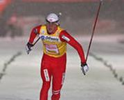

Английское слово ski произошло от древненорвежского слова skid, что означает «доска» или «кусок расщепленного дерева». Археологический находки показывают, что люди использовали лыжи на больших территориях Сибири и Европы на протяжении 4000-5000 лет. Наскальный рисунок «Человек из Рёдёй», на котором изображен лыжник, был найден около 1930 года. Еще до прихода христианства наши предки верили и поклонялись ряду богов, которые имеют отношение к этому виду спорта. На гербе города Лиллехамера изображен рыцарь на лыжах, а в норвежской мифологии бог Улл был лучшим лыжником и охотником. Уже в 6 веке н.э. греческие писатели знали слово "skridfinner", что означает «саами на лыжах» и предполагали, что лыжи были необходимы для охоты на диких оленей. В старинных скандинавских сагах уже упоминались лыжи, на них с удовольствием катались уже в XVIII столетии, а в XIХ веке уже прошли первые лыжные соревнования, которые стали проводиться ежегодно. Сондре Норхейма (1825-1897) стал изобретателем лыж «Телемарк» с креплениями и слегка изогнутыми сторонами, что и послужило толчком к развитию лыжных гонок. Колоссальное значение в развитии лыжного спорта принадлежит Фритьофу Нансену (1861-1930). Он известен как путешественник, первый пересекший Гренландию на лыжах и говоривший, что лыжи – самый национальный из всех видов спорта в Норвегии. Норвегию по праву можно называть родиной горнолыжного спорта, где впервые прошли международные лыжные соревнования в Холменколлене в 1892 году. Это был восемнадцати километровый забег и соревнования по прыжкам с трамплина.